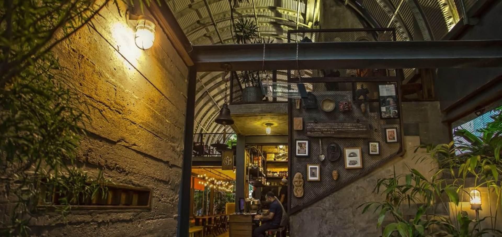
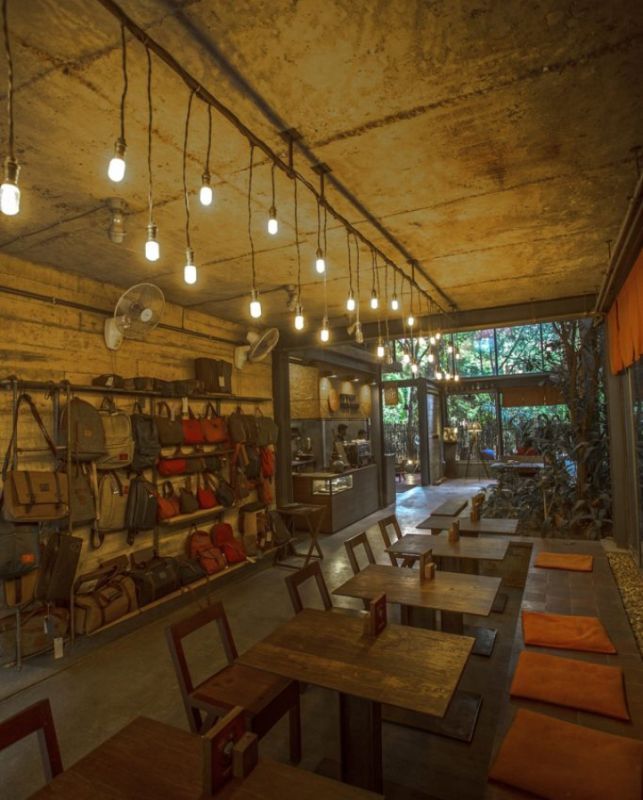
Project address:
(23°52'13.6"N 90°23'31.8"E) Road 2, Sector 13, Uttara, 1230 Dhaka, Bangladesh
Client:
Khaled Mahmud
Design Period:
July 2015-Oct 2016
Construction Period:
November 2015-January 2017 (active construction period 6 months)
Status:
Operational from January 2017
AJO, in Bangla is often used to describe something old, left out or irrelevant to its time. The word was used by the restaurant’s Founder and ideator Khaled Mahmud
as the idea was to convert a left over space and turn it into a unique cafe near an art gallery. It was a very popular hangout space among people including artist, thinkers and designers. It acted as a platform where any one could meet and talk with artists and intellects.
Design Teams:
Principal architect:
Ar.Rashed Hassan Chowdhury
Project Architect:
Ar.Sayedil Ashrafin, Ar.Emon Mahbub
Landscape Architect:
In house Collaborators
Structural designer:
Engr.Shamsul Alam
Engr.Asaduzzaman
Engr.Mamunur Rashid
Electrical Engr. Afzal Ahmed
Mechanical Engr. Kamruzzaman
Engr.Asaduzzaman
Engr.Mamunur Rashid
Electrical Engr. Afzal Ahmed
Mechanical Engr. Kamruzzaman
Construction Firm:
ALM Steel Building Technology limited
Supported by:
Mir Akter Real Estate
Accolades:
1. Berger Award for Excellence in
Architecture, 2017 Best Architects' Award
Category: Commercial / Mercantile /
Outlet Category
Architecture, 2017 Best Architects' Award
Category: Commercial / Mercantile /
Outlet Category
2. 28th JK AYA (Architect of the Year
Awards) 2018 Young Architect Award
Category: Foreign Country Architecture
Award
Awards) 2018 Young Architect Award
Category: Foreign Country Architecture
Award
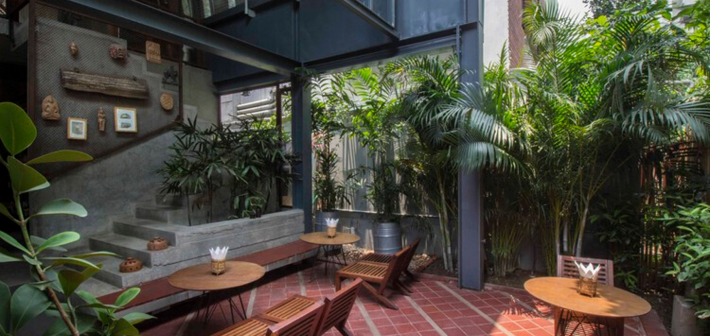
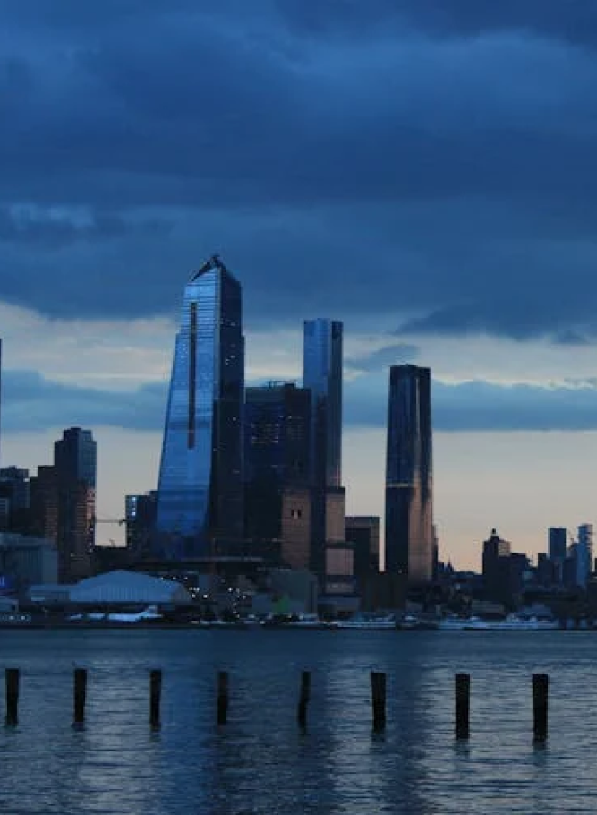
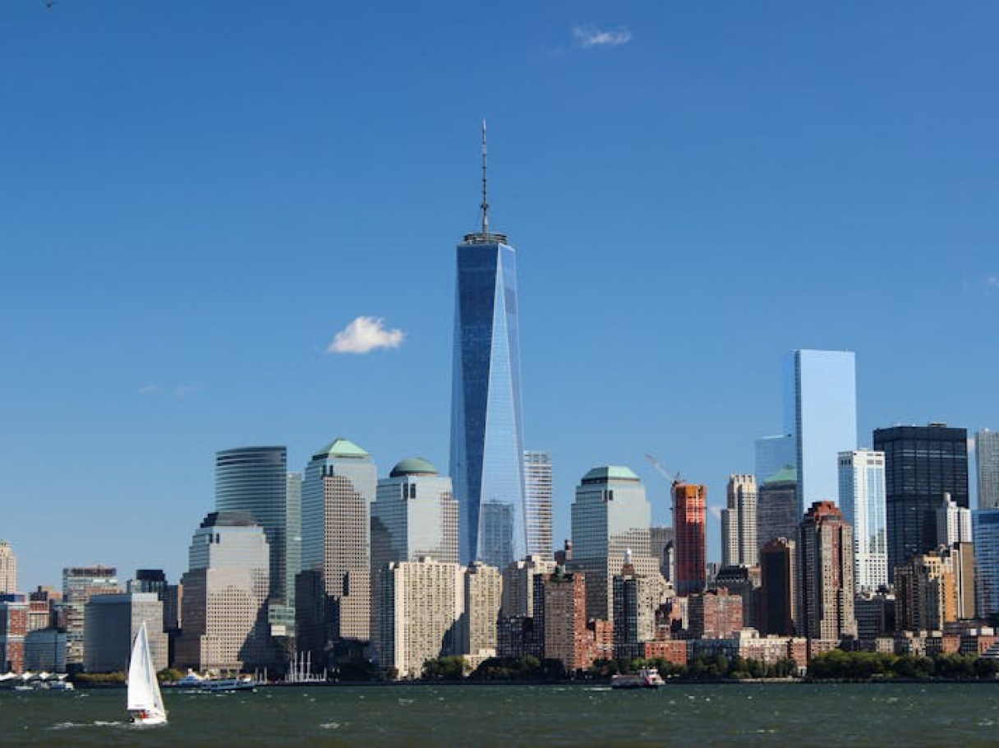
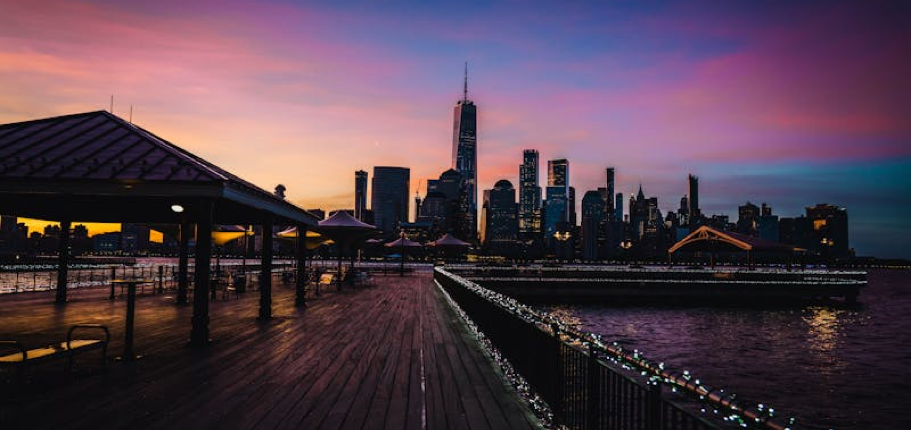
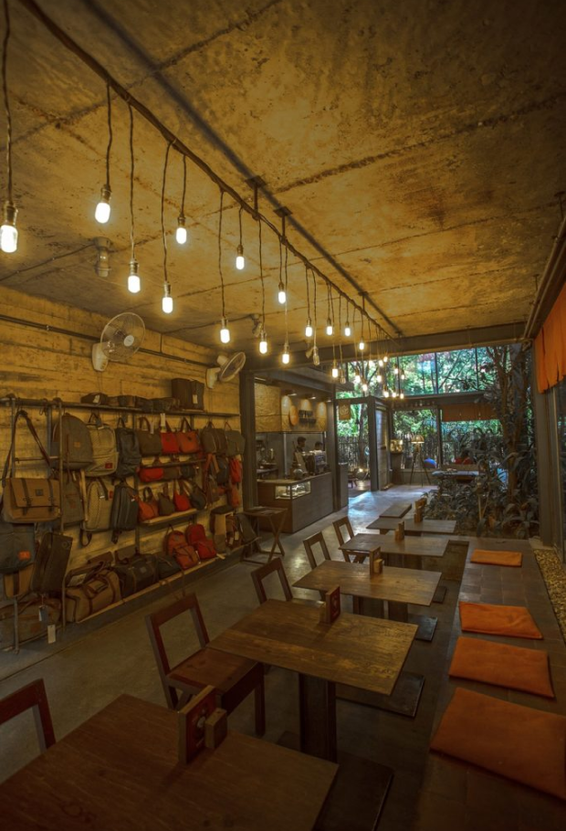
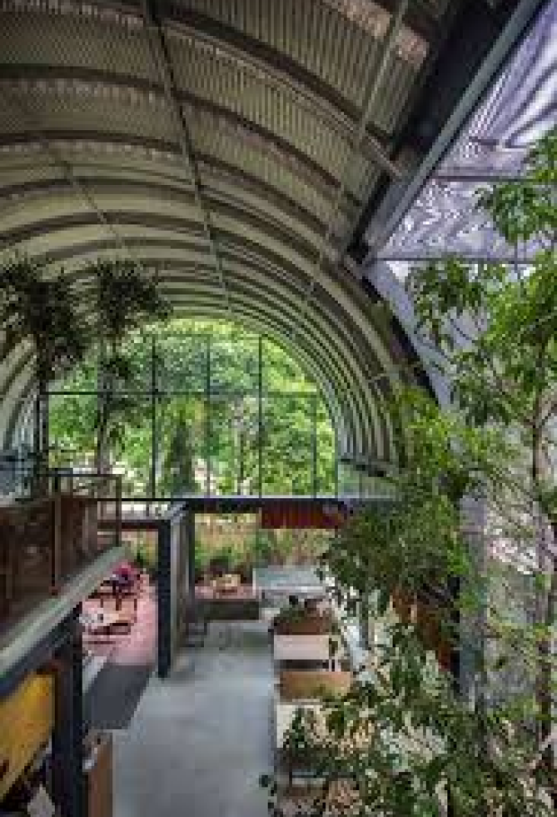
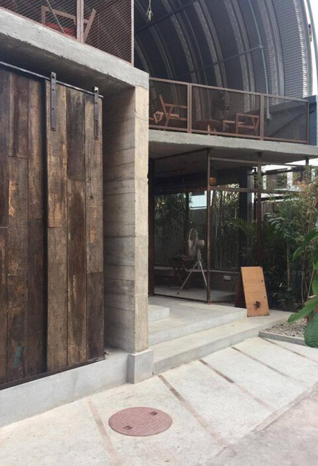
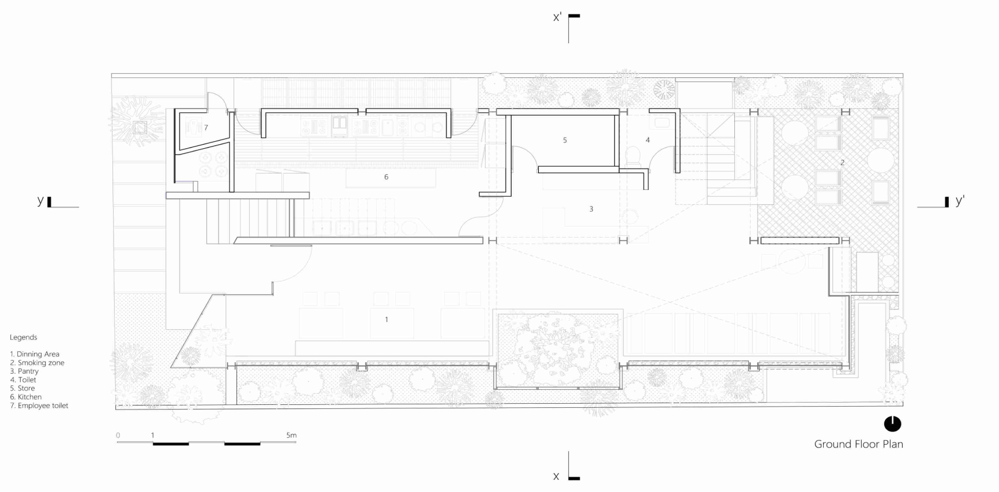
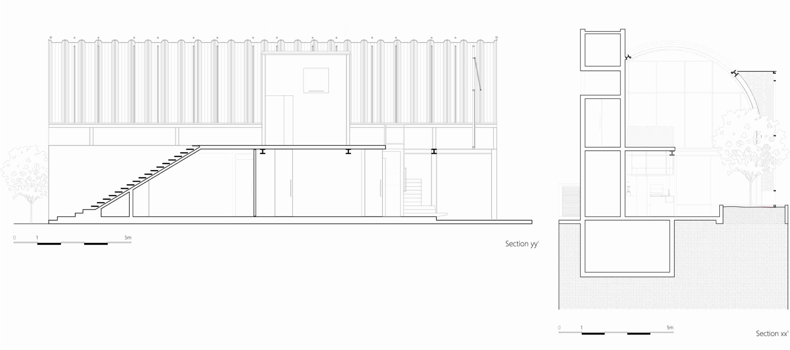
Previous project:
Next project: